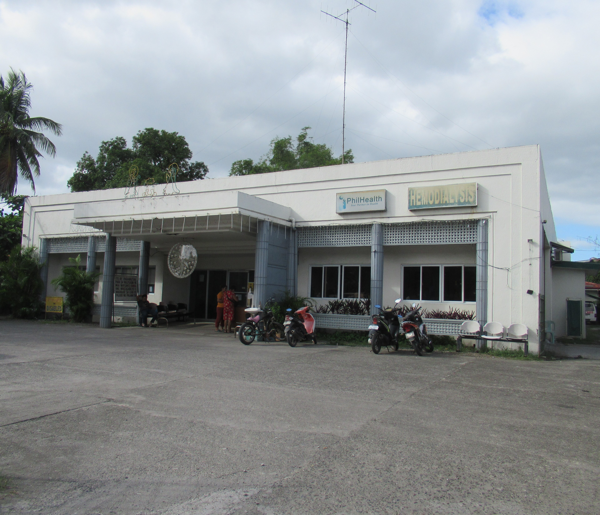

Health Centers
Find a Health Center
Choose from our network of health centers across Pulilan, Bulacan

Pulilan Rural Health Unit I
Poblacion, Pulilan
General ConsultationVaccination+1 more
Mon–Fri: 8:00 AM – 5:00 PM
'">
Pulilan Rural Health Unit II
Cutcot, Pulilan
Child ImmunizationFamily Planning+1 more
Mon–Fri: 8:00 AM – 5:00 PM

'">Pulilan Rural Health Unit III
Tinejero, Pulilan
General ConsultationVaccination+1 more
Mon–Fri: 8:00 AM – 5:00 PM

Pulilan Rural Health Unit IV
Tibag, Pulilan
Prenatal CareMaternal Care+1 more
Mon–Fri: 8:00 AM – 5:00 PM